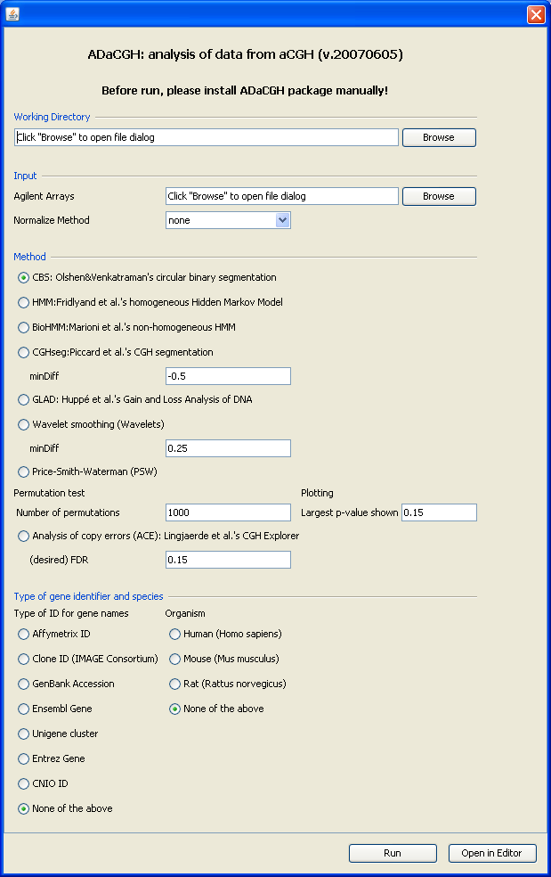

Screenshots
Here you find some screenshots of RGG GUIs with corresponding .rgg files. This page will be updated occasionally.
Agilent Single Channel Expression Microarray QC Report
An R-GUI for the quality control report of Agilent single channel expression microarrays. To download the RGG definition file, please click here.

Fisher`s Exact Test for Count Data
Performs Fisher's exact test for testing the null of independence of rows and columns in a contingency table with fixed marginals.

The ADaCGH package
For more information, please click ADaCGH. To see the RGG definition file,click here. To download it, please right click and then "Save Link As".
